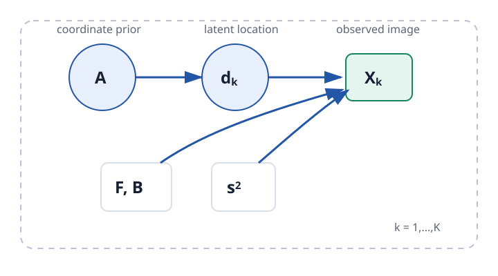
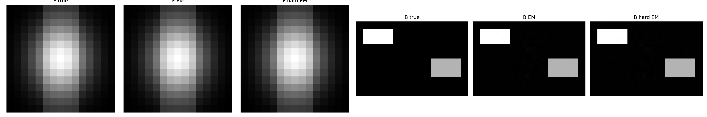
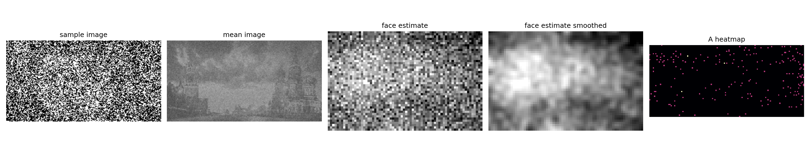
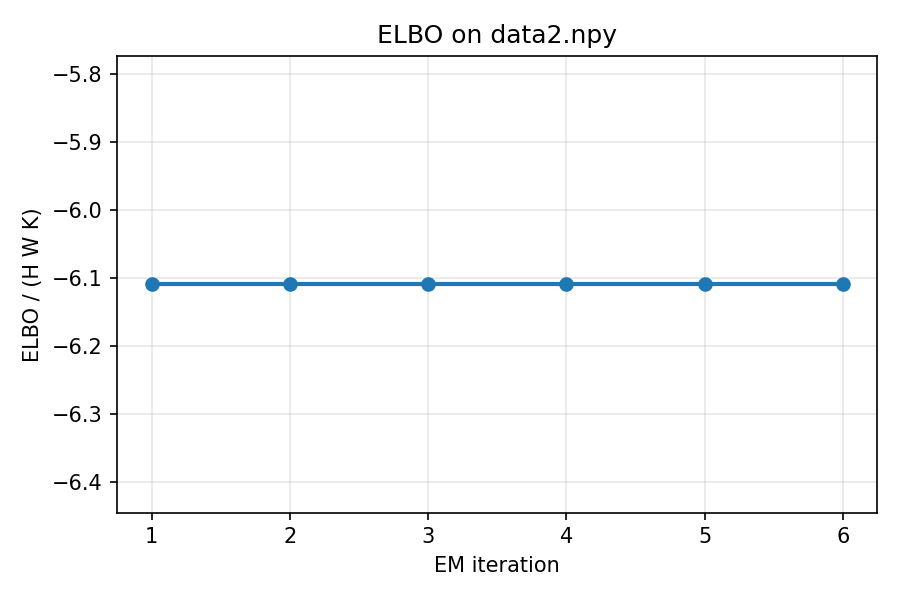
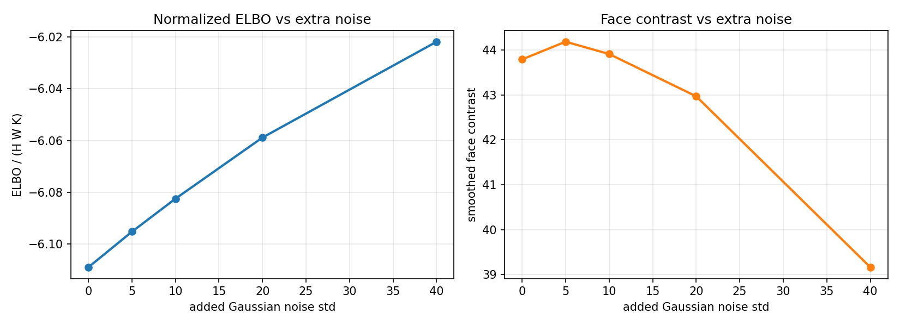
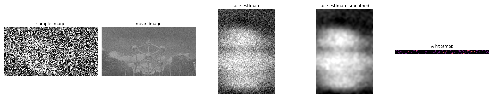

Overview
A focused study of latent-variable inference in noisy images.
This project began as an EM assignment on noisy image reconstruction. I extended it with a research-style write-up, stable implementation details, multi-start training, ablations, visual diagnostics, and a careful discussion of what the model can and cannot identify.
Problem setup
A latent-coordinate image model.
Each image contains a shared static background \(B\), an object \(F\), and a hidden top-left coordinate \(d_k\). Pixels are corrupted by independent Gaussian noise with standard deviation \(s\).
- The latent variable is the object location \(d_k = (d_k^h, d_k^w)\).
- The prior over locations is categorical: \(p(d_k=z \mid A)=A_z\).
- The goal is maximum likelihood estimation of \(A, F, B, s^2\) from incomplete observations.

Method
Closed-form EM with log-space posterior inference.
The derivation follows the standard EM lower-bound view: infer the posterior over latent coordinates, then maximize the expected complete-data log likelihood. The implementation keeps posterior computation in log space for numerical stability.
Experiments
Ablations over noise, sample size, initialization, and hard decisions.
The experiments are designed to surface both successful recovery and failure modes. EM is non-convex, so the reported analysis emphasizes initialization sensitivity, normalized lower bounds, runtime, and reconstruction quality rather than only showing the best image.
| Experiment | Question | Diagnostic | Main observation |
|---|---|---|---|
| Synthetic recovery | Can EM recover \(F\) and \(B\) when the model assumptions hold? | Recovered object/background, final ELBO, estimated \(s\). | The toy object and background are recovered cleanly after the corrected M-step. |
| Initialization sweep | How much do random starts matter? | Final ELBO and MSE across seeds. | Best and worst starts differ sharply, which supports multi-start EM. |
| Noise and sample size | How do \(K\) and noise affect reconstruction? | \(\mathcal{L}/(KHW)\), object MSE, background MSE, estimated \(s\). | More data generally stabilizes recovery; noise weakens location evidence. |
| Soft vs hard EM | What is the cost of collapsing uncertainty to MAP coordinates? | Runtime, final lower bound, reconstruction quality. | Hard EM is faster on the toy case, but soft EM is the safer default in ambiguous settings. |
Results
Visual diagnostics make the inference behavior inspectable.
The figures below show the main outputs used for debugging and interpretation: synthetic recovery, real-data reconstruction, lower-bound behavior, and robustness checks.





Failure modes and safety relevance
The useful part is not pretending the model always works.
This is not an AI safety result by itself. I use it as evidence of transferable skills: probabilistic modeling under uncertainty, inference implementation, experiment design, ablations, and clear reporting of assumptions and limitations.
Identifiability and failure modes
- If the object resembles the background, location evidence becomes weak.
- If \(K\) is too small, the model can absorb object pixels into the background estimate.
- If initialization makes \(A\) too concentrated, hard EM can commit to wrong locations early.
- If noise overwhelms object/background contrast, posterior mass over coordinates becomes diffuse.
Bayesian extension
- A Dirichlet prior on \(A\) could smooth the coordinate prior.
- Gaussian priors on \(F\) and \(B\) could regularize pixel estimates.
- An inverse-gamma prior on \(s^2\) could make noise estimation less brittle.
- Variational Bayes or MCMC would expose posterior uncertainty over parameters.
Reproducibility
Static page, reproducible code.
GitHub Pages serves only static files, so the figures here are pre-generated. The Python scripts in the repository regenerate the report figures, metrics, and diagnostics.
python3 run_tests.py
python3 run_experiments.py
python3 data2_analysis.py
python3 clip_effect_analysis.py
pdflatex -interaction=nonstopmode REPORT.tex